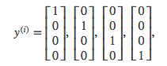

- Why Neural Networks
- Background of Neural Networks
- Model Representation
- Examples and Intuitions
- Multiclass Classification
- Cost Function
- Backpropagation Algorithm
- Gradient Checking
- Putting it Together
Why Neural Networks
The number of quadratic features closes to \(\frac{n^2}{2}\), it is computationally expensive.
The number of cubic features closes to \(O(n^3)\), it is more computationally expensive.
Computer vision problem looks at matrixes. Because dimensions of pixel images often large (e.g. n= 7500 for 50\(\times\)50 pixel images(RGB)), the number of quadratic features for the problem are 3 million.
Background of Neural Networks
Origins: Algorithms that try to mimic the brain. It was very widely used in 80s and early 90s; popularity diminished in late 90s. It is now a state of the art technique for many application, because its expensive computation can be meet.
Model Representation
At a very simple level, neurons are basically computational units that take inputs (dendrites) as electrical inputs (spikes) that are channeled to outputs (axons).
- Input:
Dendrite（树突） - Output:
Axon（轴突）

In neural networks, dendrites are like the input features \(x_1⋯x_n\), and the output is the result of our hypothesis function. \(x_0\) input node is sometimes called the bias unit. It is always equal to 1. In neural networks, we use the same logistic function as in classification, \(\frac{1}{1+e^{-\theta^Tx}}\), yet we sometimes call it a sigmoid (logistic) activation function. In this situation, our "theta" parameters are sometimes called weights.
Visually, a simplistic representation looks like:
\[\begin{bmatrix}x_0 \newline x_1 \newline x_2 \newline \end{bmatrix}\rightarrow\begin{bmatrix}\ \ \ \newline \end{bmatrix}\rightarrow h_\theta(x)\]
Input nodes (layer 1), also known as the input layer, go into another node (layer 2), which finally outputs the hypothesis function, known as the output layer.
We can have intermediate layers of nodes between the input and output layers called the hidden layers.
In this example, we label these intermediate or hidden layer nodes \(a^2_0⋯a^2_n\) and call them activation units.
\[\begin{align*}& a_i^{(j)} = \text{"activation" of unit $i$ in layer $j$} \newline& \Theta^{(j)} = \text{matrix of weights controlling function mapping from layer $j$ to $j+1$}\end{align*}\\
\text{ will be of dimension }s_{j+1}\times(s_{j+1})\]
The values for each of the "activation" nodes is obtained as follows:
\[\begin{align*} a_1^{(2)} = g(\Theta_{10}^{(1)}x_0 + \Theta_{11}^{(1)}x_1 + \Theta_{12}^{(1)}x_2 + \Theta_{13}^{(1)}x_3) \newline a_2^{(2)} = g(\Theta_{20}^{(1)}x_0 + \Theta_{21}^{(1)}x_1 + \Theta_{22}^{(1)}x_2 + \Theta_{23}^{(1)}x_3) \newline a_3^{(2)} = g(\Theta_{30}^{(1)}x_0 + \Theta_{31}^{(1)}x_1 + \Theta_{32}^{(1)}x_2 + \Theta_{33}^{(1)}x_3) \newline h_\Theta(x) = a_1^{(3)} = g(\Theta_{10}^{(2)}a_0^{(2)} + \Theta_{11}^{(2)}a_1^{(2)} + \Theta_{12}^{(2)}a_2^{(2)} + \Theta_{13}^{(2)}a_3^{(2)}) \newline \end{align*}\]
If network has \(s_j\) units in layer \(j\) and \(s_{j+1}\) units in layer \(j+1\), then \(\Theta^{(j)}\) will be of dimension \(s_{j+1}×(s_j+1)\). The \(+1\) comes from the addition in \(\Theta^{(j)}\) of the bias nodes, \(x_0\) and \(\Theta^{(j)}_0\). In other words the output nodes will not include the bias nodes while the inputs will.
We're going to define a new variable \(z^{(j)}_k\) that encompasses the parameters inside our \(g\) function. In our previous example if we replaced by the variable \(z\) for all the parameters we would get:
\[\begin{align*}a_1^{(2)} = g(z_1^{(2)}) \newline a_2^{(2)} = g(z_2^{(2)}) \newline a_3^{(2)} = g(z_3^{(2)}) \newline \end{align*}\]
In other words, for layer \(j=2\) and node \(k\), the variable \(z\) will be:
\[z_k^{(2)} = \Theta_{k,0}^{(1)}x_0 + \Theta_{k,1}^{(1)}x_1 + \cdots + \Theta_{k,n}^{(1)}x_n\]
The vector representation of \(x\) and \(z_j\) is:
\[\begin{align*}x = \begin{bmatrix}x_0 \newline x_1 \newline\cdots \newline x_n\end{bmatrix} &z^{(j)} = \begin{bmatrix}z_1^{(j)} \newline z_2^{(j)} \newline\cdots \newline z_n^{(j)}\end{bmatrix}\end{align*}\]
Setting \(x=a^{(1)}\), we can rewrite the equation as:
\[z^{(j)} = \Theta^{(j-1)}a^{(j-1)}\]
Now we can get a vector of our activation nodes for layer \(j\) as follows:
\[a^{(j)} = g(z^{(j)})\]
Last Step:
\[h_\Theta(x) = a^{(j+1)} = g(z^{(j+1)})\]
Examples and Intuitions
The \(\Theta^{(1)}\) matrices for AND, NOR, and OR are:
\[\begin{align*}AND:\newline\Theta^{(1)} &=\begin{bmatrix}-30 & 20 & 20\end{bmatrix} \newline NOR:\newline\Theta^{(1)} &= \begin{bmatrix}10 & -20 & -20\end{bmatrix} \newline OR:\newline\Theta^{(1)} &= \begin{bmatrix}-10 & 20 & 20\end{bmatrix} \newline\end{align*}\]
We can combine these to get the \(XNOR\) logical operator (which gives 1 if \(x_1\) and \(x_2\) are both 0 or both 1).
\[\begin{align*}\begin{bmatrix}x_0 \newline x_1 \newline x_2\end{bmatrix} \rightarrow\begin{bmatrix}a_1^{(2)} \newline a_2^{(2)} \end{bmatrix} \rightarrow\begin{bmatrix}a^{(3)}\end{bmatrix} \rightarrow h_\Theta(x)\end{align*}\]
For the transition between the first and second layer, we'll use a \(\Theta^{(1)}\) matrix that combines the values for AND and NOR:
\[\Theta^{(1)} =\begin{bmatrix}-30 & 20 & 20 \newline 10 & -20 & -20\end{bmatrix}\]
For the transition between the second and third layer, we'll use a \(\Theta^{(2)}\) matrix that uses the value for OR:
\[\Theta^{(2)} =\begin{bmatrix}-10 & 20 & 20\end{bmatrix}\]
Let's write out the values for all our nodes:
\[\begin{align*}& a^{(2)} = g(\Theta^{(1)} \cdot x) \newline& a^{(3)} = g(\Theta^{(2)} \cdot a^{(2)}) \newline& h_\Theta(x) = a^{(3)}\end{align*}\]
Multiclass Classification
To classify data into multiple classes, we let our hypothesis function return a vector of values. Say we wanted to classify our data into one of four categories. We will use the following example to see how this classification is done. This algorithm takes as input an image and classifies it accordingly:

We can define our set of resulting classes as \(y\):

Each \(y(i)\) represents a different image corresponding to either a car, pedestrian, truck, or motorcycle. The inner layers, each provide us with some new information which leads to our final hypothesis function. The setup looks like:

Our resulting hypothesis for one set of inputs may look like:
\[h_\Theta(x) =\begin{bmatrix}0 \newline 0 \newline 1 \newline 0 \newline\end{bmatrix}\]
In which case our resulting class is the third one down, or \(h_\Theta(x)_3\), which represents the motorcycle.
Cost Function
Let's first define a few variables that we will need to use:
- \(L\) = total number of layers in the network
- \(s_l\) = number of units (not counting bias unit) in layer \(l\)
- \(K\) = number of output units/classes
Recall that in neural networks, we may have many output nodes. We denote \(h_\Theta(x)^k\) as being a hypothesis that results in the \(k\)th output. Our cost function for neural networks is going to be a generalization of the one we used for logistic regression. Recall that the cost function for regularized logistic regression was:
\[J(\theta) = - \frac{1}{m} \sum_{i=1}^m [ y^{(i)}\ \log (h_\theta (x^{(i)})) + (1 - y^{(i)})\ \log (1 - h_\theta(x^{(i)}))] + \frac{\lambda}{2m}\sum_{j=1}^n \theta_j^2\]
For neural networks, it is going to be slightly more complicated:
\[\begin{gather*} J(\Theta) = - \frac{1}{m} \sum_{i=1}^m \sum_{k=1}^K \left[y^{(i)}_k \log ((h_\Theta (x^{(i)}))_k) + (1 - y^{(i)}_k)\log (1 - (h_\Theta(x^{(i)}))_k)\right] + \\\frac{\lambda}{2m}\sum_{l=1}^{L-1} \sum_{i=1}^{s_l} \sum_{j=1}^{s_{l+1}} ( \Theta_{j,i}^{(l)})^2\end{gather*}\]
We have added a few nested summations to account for our multiple output nodes. In the first part of the equation, before the square brackets, we have an additional nested summation that loops through the number of output nodes.
In the regularization part, after the square brackets, we must account for multiple \(\Theta\) matrices. The number of columns in our current theta matrix is equal to the number of nodes in our current layer (including the bias unit). The number of rows in our current \(\Theta\) matrix is equal to the number of nodes in the next layer (excluding the bias unit). As before with logistic regression, we square every term.
Note:
- the double sum simply adds up the logistic regression costs calculated for each cell in the output layer
- the triple sum simply adds up the squares of all the individual \(\Theta\)s in the entire network.
- the \(i\) in the triple sum does not refer to training example \(i\)
Backpropagation Algorithm
Backpropagation is neural-network terminology for minimizing cost function, similar to gradient descent in logistic and linear regression. Our goal is to realize:
\[\min_\Theta J(\Theta)\]
That is, we want to minimize cost function \(J\) using an optimal set of parameters in \(\Theta\). The algorithm to minimize the cost function is as follows:
Backpropagation algorithm:
- Training set \(\{(x^{(1)},y^{(1)}),...,(x^{(m)},y^{(m)})\}\)
- Set \(\Delta_{ij}^{(l)}=0\) (for all \(l,i,j\))
- For \(i=1\) to \(m\)
- Set \(a^{(1)}=x^{(i)}\)
- Perform forward propagation to compute \(a^{(l)}\) for \(l=2,3,...,L\)
- Using \(y^{(i)}\), compute \(\delta^{(L)}=a^{(L)}-y^{(i)}\)
- Compute \(\delta^{(L-1)},...,\delta^{(2)}\)
- \(\Delta^{(l)}_{ij}:=\Delta^{(l)}_{ij} +a_{ij}\delta_i^{(l+1)}\)
- \(D_{ij}^{(l)}=\frac{1}{m}\Delta_{ij}^{(l)}+\lambda\Theta_{ij}^{(l)}\) if \(j\ne0\)
- \(D_{ij}^{(l)}=\frac{1}{m}\Delta_{ij}^{(l)}\) if \(j=0\)
Gradient Checking
Gradient checking will assure that our backpropagation works as intended. We can approximate the derivative of our cost function with:
\[\dfrac{\partial}{\partial\Theta}J(\Theta) \approx \dfrac{J(\Theta + \epsilon) - J(\Theta - \epsilon)}{2\epsilon}\]
With multiple theta matrices, we can approximate the derivative with respect to \(Θ_j\) as follows:
\[\dfrac{\partial}{\partial\Theta_j}J(\Theta) \approx \dfrac{J(\Theta_1, \dots, \Theta_j + \epsilon, \dots, \Theta_n) - J(\Theta_1, \dots, \Theta_j - \epsilon, \dots, \Theta_n)}{2\epsilon}\]
A small value for \(\epsilon\) such as \(\epsilon=10^{-4}\), guarantees that the math works out properly. If the value for \(\epsilon\) is too small, we can end up with numerical problems.
Once we compute numerical gradient, we can check that it's approximate to analytical gradient. We don't use numerical grads, because it is very slow.
Putting it Together
Training a Neural Network:
- Randomly initialize the weights
- Implement forward propagation
- Implement the cost function
- Implement backpropagation to compute partial derivatives
- Use gradient checking to confirm that your backpropagation works. Then disable gradient checking.
- Use gradient descent or a built-in optimization function to minimize the cost function with the weights in theta.